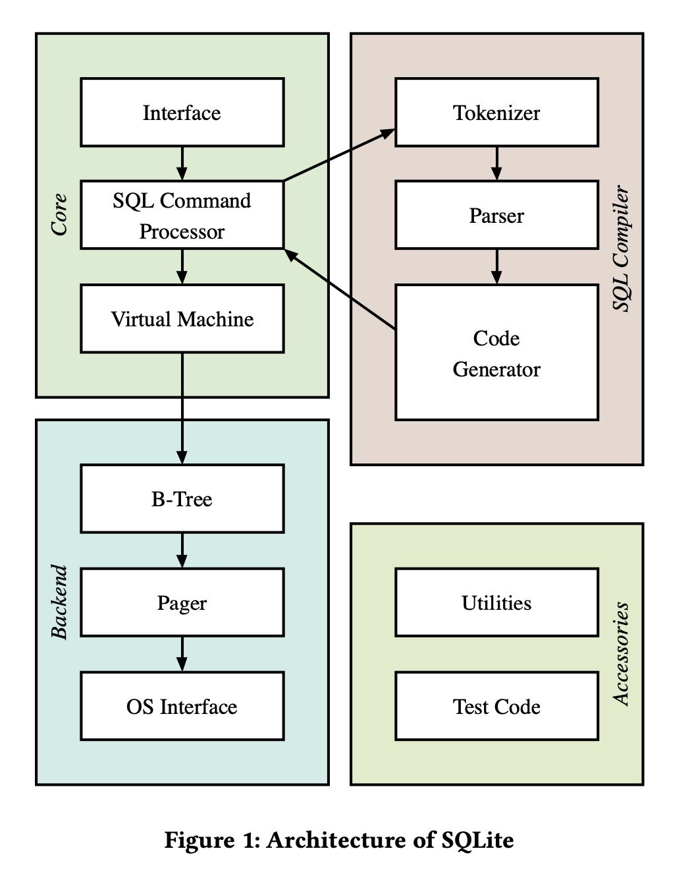
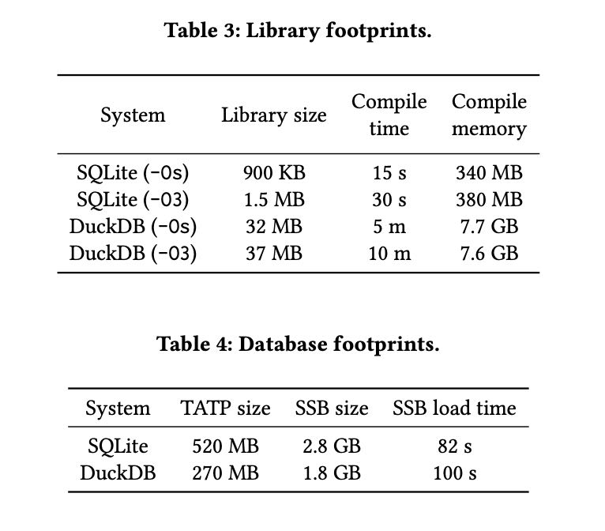

SQL
Table of Contents
ite: Past, Present, and Future
https://www.vldb.org/pvldb/vol15/p3535-gaffney.pdf
1. introduction
最开始是tcl语言扩展，所以target就是类似嵌入式的数据库。现在已经集成在浏览器，个人电脑，智能手机，PHP/Python语言里面，有差不多trillion级别的sqlite db在运行，可以想象这个稳定性特别好。
SQLite was initially released in August 2000 as a small library of data management functions [29]. Originally packaged as an extension to the Tcl programming language, SQLite was born out of the frustration of debugging a database server running in a separate process [53]. Unlike client-server database systems, which typically occupy dedicated processes and communicate with applications via shared memory primitives, SQLite is embedded in the process of the host application [33]. Instead of communicating with a database server across process boundaries, applications manage a SQLite database by calling SQLite library functions.
In the decades that followed its initial release, SQLite grew to become the most widely deployed database engine in existence [27]. SQLite is embedded in major web browsers, personal computers, smart televisions, automotive media systems, and the PHP and Python programming languages. Furthermore, SQLite is found in every iOS and Android device, which currently number in the billions. There are likely over one trillion SQLite databases in active use. It is estimated that SQLite is one of the most widely deployed software libraries of any type.
SQLite的几个特点:
- 跨平台：8-bt byte, 32/64整数，C compiler. 美国国会图书馆的数字文件存储格式
- 集成性：150K代码，编译出来750KB.
- 可靠性：100%测试覆盖率，1行代码600行测试代码，可以运行在关键系统中
- 速度：~10K tps, 相比fs读取和空间上都有优势
- Cross-platform. A SQLite database is stored in a single file, which can be freely copied between 32-bit and 64-bit machines and little-endian and big-endian architectures [30]. SQLite can run on any platform with an 8-bit byte, two’s complement 32-bit and 64-bit integers, and a C compiler. Due to its stability and portability, SQLite’s file format is a US Library of Congress recommended storage format for the preservation of digital content [1].
- Compact and self-contained. The SQLite library is avail- able as a single C file, consisting about 150 thousand lines of source code [31]. With all features enabled, the compiled library size can be less than 750 KiB [17]. SQLite has no exter- nal dependencies and requires only a handful of C standard library functions to operate. SQLite requires no installation or configuration.
- Reliable. There are over 600 lines of test code for every line of code in SQLite [25]. Tests cover 100% of branches in the library. The test suite is extremely diverse, including fuzz tests, boundary value tests, regression tests, and tests that simulate operating system crashes, power losses, I/O er- rors, and out-of-memory errors. Due to its reliability, SQLite is often used in mission-critical applications such as flight software [36].
- Fast. SQLite can support tens of thousands of transactions per second. In some cases, SQLite reads and writes blob data 35% faster and uses 20% less storage space than the filesystem [16]. SQLite’s query planner produces efficient plans for complex analytical queries [28].
除了OLTP场景外，在智能手机上大部分都点查和单表扫描，偶尔会有比较复杂的分析。可以跑的workload多种多样，还可以管理blob.
However, SQLite is used in scenarios that are well outside the boundaries of conventional OLTP. Well-known uses of SQLite in- clude processing data on embedded devices and the internet of things, managing application state as an application file format, serving website requests, analyzing large datasets, caching enter- prise data, and transferring data from one system to another [19]. A previous study, which traced SQLite activity on mobile phones, found that SQLite was used for a diverse range of tasks [39]. During the study, the majority of operations performed by SQLite were single-table scans and key-value lookups. However, the trace in- cluded much more complex analytical queries that involved joins between several tables. In addition, a small but significant portion of the workloads consisted of OLTP operations.
理论上用来做数据分析也是不错的，但是现在有了更好的选择DuckDB.
An embeddable data- base engine is better equipped to handle these workloads. For this reason, SQLite is already a popular tool in data science. Due to its stability, portability, and space-efficiency, the SQLite database file format is commonly used for sharing datasets. For example, SQLite is one of the primary file formats used by the popular Kaggle data science platform [38]. The Python sqlite3 module [15] is often used to carry out SQL operations in data science notebooks. While SQLite produces efficient query plans and handles datasets much larger than memory, it is less optimized for analytics compared to OLAP-specific database systems such as those mentioned above.
2. architecture
sqlite设计上比较模块化

执行引擎上是一个VM
SQLite’s execution engine is structured as a virtual machine. The virtual machine, also known as the virtual database engine (VDBE), is the heart of SQLite. The VDBE is re- sponsible for executing the logic of the bytecode program produced by the code generator. The VDBE begins with the instruction at address 0 and continues until it sees a Halt instruction, encounters an error, or reaches the end of the bytecode program. The instruc- tion logic is implemented as a large switch statement in the VDBE, where each instruction is processed as a unique case. When the VDBE exits, it frees any memory it may have allocated and closes any cursors it may have opened. If an error was encountered, the VDBE rolls back any pending changes to the database to leave it in a clean state.
b-tree有两类：table btree和index btree. 其中table btree要求每行有一个row id来作为key，数据存储在leaf节点上。 index tree的key可以是任意长。如果table btree要求没有row id( `WITHOUT ROWID` ) 的话，那么就会将所有的列都存储以index tree来存储。
对接OS interface采用的是类似VFS的结构，这样可以挂在不同操作系统上
The page cache is responsible for providing pages of data re- quested by B-tree module. The page cache is also responsible for ensuring modified pages are flushed to stable storage safely and efficiently. Finally, the OS interface is the gateway to the underlying file system. SQLite uses an abstract object called the virtual file sys- tem (VFS) to provide portability across operating systems. SQLite comes with several existing VFSes for Unix and Windows operating systems. A VFS can be created to support a new operating system or extend the functionality of SQLite.
txn有两种模式：undo(rollback mode, 实现上还有DELETE/TRUNCATE区分), redo(WAL mode).
3. evolution on workloads & hw
3.1. hw advancements
从16MHz单核处理器扩展到了高频多核处理器
While the improvement of computing hardware over time is well understood, it is important to contextualize how quickly some of these changes have come about. One of the earliest devices to successfully run SQLite was a Palm Pilot, a personal digital assistant powered by a Motorola MC68328, a 16MHz, single core processor [40, 45]. While in this case it was an independent user that deployed SQLite to their personal phone, the trend of SQLite being used in resource constrained environments would continue. Nokia and Motorola were two of the earliest companies to adopt SQLite into their mobile phones. Eventually, Google would follow as well, integrating SQLite into its Android platform where it continues to be used to this day [27, 36, 45].
However, mobile compute has fundamentally changed since the early 2000s. For example, the Raspberry Pi 4 Model B, which we use as part of our evaluation in section 4, was released in July 2019 as an inexpensive yet powerful single-board computer [12, 13]. The Raspberry Pi 4 Model B uses an ARM Cortex-A72, a 1.5GHz 4-core processor [14], which is a significant performance improvement compared to the Motorola processor mentioned above. Furthermore, the Raspberry Pi 4 Model B is powered by computing hardware that supports single instruction, multiple data (SIMD) and hardware- level parallelism. As illustrated by the dramatic differences between the Motorola processor and the Raspberry Pi 4 Model B, the ca- pabilities of mobile computing hardware have grown at a rapid pace.
3.2. workload changes
从OLTP衍生到了各种场景, 目前来看这块还行。
In addition to the aforementioned hardware advancements, the software that uses SQLite has evolved as well. We emphasize that, fundamentally, SQLite is an OLTP-focused database engine that is significantly optimized for use in resource constrained environ- ments. However, SQLite is often used for workloads that are consid- erably different than those for which it was originally designed. For example, a month-long trace of SQLite usage on mobile phones ob- served a broad range of workloads with varying query complexity and read/write mix [39]. A large proportion of operations were sim- ple key-value lookups, suggesting that SQLite is often used simply as a key-value store. However, the trace included a significant tail of complex OLAP queries. These queries involved multiple levels of nesting or joins between 5 or more tables. In addition, about 25% of all observed statements involved writes to the database. Many of these writes were UPSERTS (insert or replace operations), providing further evidence that SQLite is often used as a key-value store. The trace also included a significant proportion of DELETES, which were much more expensive than other statements, averaging about 4 ms per statement. Several DELETE statements included predicates with nested SELECT queries. This study suggests that usage of SQLite is extremely varied. Furthermore, this study was limited to mobile phone usage; we expect even greater workload diversity when con- sidering the range of devices on which SQLite runs. Broadly, we find that these observations represent the continually expanding demands of real-world applications.
3.3. in modern world
硬件发展情况下，充分利用多核特性
The expansion of hardware capabilities calls for a deeper evalua- tion into the underlying implementation of SQLite. Notably, SQLite generally does not use multiple threads, which limits its ability to take advantage of the available hardware parallelism. For sort- ing large amounts of data, SQLite uses an optional multithreaded external merge sort algorithm. For all other operations, SQLite per- forms all work in the calling thread. This design minimizes resource competition with other processes running on the device. However, it is likely that certain workloads, particularly those that include complex OLAP, would benefit from multithreading.
从OLTP扩展到OLAP场景，存储格式和执行引擎的变化
Furthermore, SQLite’s row-oriented storage format and execution engine are suboptimal for many OLAP operations. In general, SQLite is con- sidered not to be competitive with state-of-the-art OLAP-focused database engines, especially in the context of its limitations. In contrast, DuckDB [47] has poised itself as “the SQLite for analytics” through a number of features modeled after SQLite, such as its embeddable design, single-file database, and self-contained code. However, DuckDB brings many state-of-the-art OLAP techniques to the SQLite-like environment, such as a vectorized engine and parallel query processing. Together, these features have enabled DuckDB’s strong OLAP performance. We question which OLAP- focused optimizations can be incorporated into SQLite without sacrificing its portability, compactness, reliability, and efficiency on diverse workloads.
4. evaluation
这节和DuckDB对比了一下SSB, 还和FS对比了一下blob operation.
和DuckDB对比过程中发现有两点改进：
- join上采用nested loops. 可以增加bloom filter来减少对inner table的点查，改进之后有4x的提升
- column value extraction. 目前sqlite按行存储，抽取列的时候还需要判断column type. 这个是sqlite flexible typing限制导致的，所以也没有办法修改。
sqlite resource footprint确实比较低，下面是和DuckDB相比：编译速度，编译资源和执行文件大小，加载CSV数据速度。
